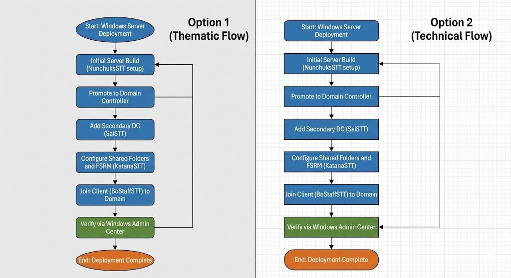

Cowabunga Pizza – Windows Server Infrastructure
This project demonstrates the design and implementation of a centralized Windows Server infrastructure for a growing organization. The environment includes Active Directory Domain Services, DHCP configuration, Group Policy security enforcement, and structured network management.
Technologies Used
- Windows Server
- Active Directory Domain Services (AD DS)
- DHCP
- Group Policy
- File Server Management
- Windows Admin Center
Infrastructure Diagrams
Network Architecture

Active Directory Structure

Shared Folder Structure

Network Flow

Project Documentation
Download the full infrastructure documentation:
Download Project Documentation